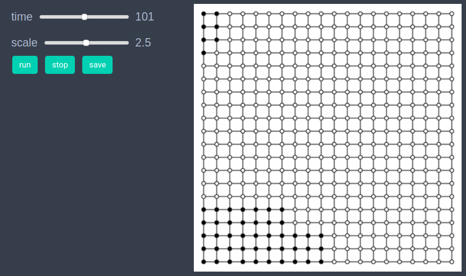
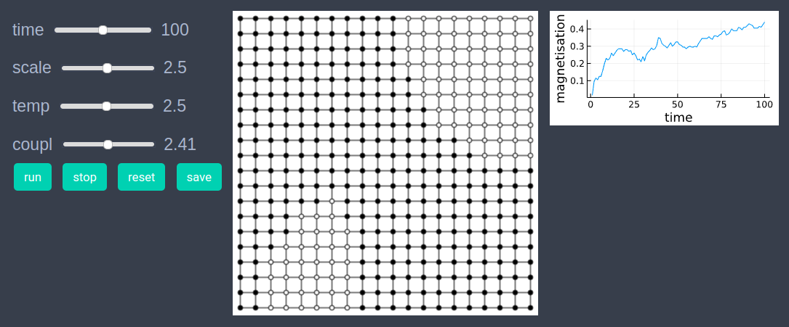
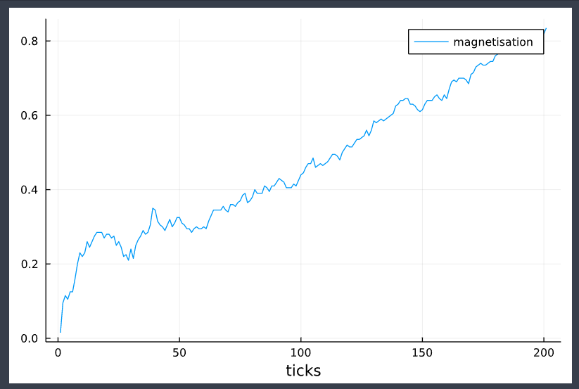

Ising model
We use Ising model as an example of using Graph Models in EasyABM. We will set up and run Ising model on a grid graph, however one can choose graph of any other topology as well.
using EasyABMStep 1: Create Model
In this model we will work solely with the graph and won't require agents. We create a grid graph of size 20x20, and then create our graph model as follows.
graph = square_grid_graph(20,20);
model = create_graph_model(graph, temp = 0.1, coupl = 1.0)The model has two properties temperature temp and coupling coupl.
Step 2: Initialise the model
In the second step we initialise the nodes of the graph through initialiser! function and then sending it as an argument to init_model!. In the initialiser! function we randomly set each node's color to either cl"black" or cl"white" and set their spin values to +1 for cl"black" nodes and -1 for cl"white" nodes. In the init_model! function the argument props_to_record specifies the nodes properties which we want to record during model run.
function initialiser!(model)
for node in vertices(model.graph)
if rand()<0.5
model.graph.nodesprops[node].spin = 1
model.graph.nodesprops[node].color = cl"black"
else
model.graph.nodesprops[node].spin = -1
model.graph.nodesprops[node].color = cl"white"
end
end
end
init_model!(model, initialiser = initialiser!, props_to_record = Dict("nodes"=>Set([:color, :spin])))Step 3: Defining the step_rule! and running the model
In this step we implement the step logic of the Ising model in the step_rule! function and run the model for 200 steps. At each step of the simulation we take 100 Monte Carlo steps, where in each Monte Carlo step a node is selected at random and its spin and color values are flipped if the Ising energy condition is satisfied.
const nn = num_nodes(model)
function step_rule!(model)
for i in 1:100
random_node = rand(1:nn)
spin = model.graph.nodesprops[random_node].spin
nbr_nodes = neighbor_nodes(random_node, model)
de = 0.0
for node in nbr_nodes
nbr_spin = model.graph.nodesprops[node].spin
de += spin*nbr_spin
end
de = 2*model.properties.coupl * de
if (de < 0) || (rand() < exp(-de/model.properties.temp))
model.graph.nodesprops[random_node].spin = - spin
model.graph.nodesprops[random_node].color = spin == -1 ? cl"black" : cl"white"
end
end
end
run_model!(model, steps=200, step_rule = step_rule! )Step 4: Visualisation
In order to draw the model at a specific frame, say 4th, one can use draw_frame(model, frame = 4). If one wants to see the animation of the model run, it can be done as
animate_sim(model)
Note that the scale slider is for changing the size of agents. As we have zero agents in the current model, this slider won't do anything.
After defining the step_rule! function we can also choose to create an interactive application (which currently works in Jupyter with WebIO installation) as shown below. It is recommended to define a fresh model and not initialise it with init_model! or run with run_model! before creating interactive app.
graph = square_grid_graph(20,20);
model = create_graph_model(graph, temp = 0.1, coupl = 1.0)
create_interactive_app(model, initialiser= initialiser!,
props_to_record = Dict("nodes"=>Set([:color, :spin])),
step_rule= step_rule!,
model_controls=[(:temp, "slider", 0.05:0.05:5), (:coupl, "slider", 0.01:0.1:5)],
node_plots = Dict("magnetisation"=> x -> x.spin),
frames=200) 
Step 5: Fetch Data
In this step we fetch the data of average spin of nodes (also called magnetisation) and plot the result as follows.
df = get_nodes_avg_props(model, node -> node.spin, labels=["magnetisation"], plot_result = true)
References
- https://en.wikipedia.org/wiki/Ising_model